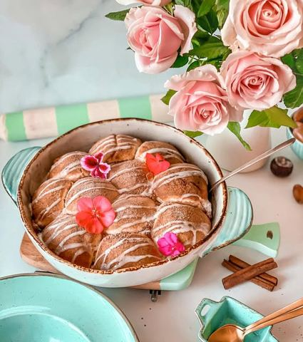

Mekane puter bombice punjene sosom od jabuka i karamela

Moja beleška
SačuvanoZa ovo vredi čekati da testo narasta, vredi paliti rernu a onda se samo malko strpiti da se prohlade.. Pa za večeru, užinu ili ujutru za doručak ako pretekne 🤗 Ono što ove buhtle čini posebnim jeste punjenje sa sosom od jabuka, cimeta i karamelama. Možete ih po svom izboru puniti nutelom, nekim dzemom, kako volite, ali čvrsto verujem da ćete isprobati i ovu zanimljivu kombinaciju.
Sastojci
Priprema
Na kockici putera lagano i kratko propržiti jabuke uz sve dodatke, pa malo prohladiti. Svaka loptica buhtle će se puniti tim sosom uz dodatak po jedne karamele. •••Testo umesiti i ostaviti u posudu premazanu tankim slojem putera da narasta 1h, posudu prekriti providnom folijom. Naraslo testo podeliti na 20ak loptica, pa jednu po jednu tanjiti na dlanu i puniti nadevom po zelji ( stavlja se na sredinu koliko je vise moguce i uz sos od jabuka dodaje se po jedna karamela, potom se buhtla zatvara, a na dno pleha stavlja taj deo gde je spoj) Pleh treba da bude podmazan puterom i svaku lopticu redom treba premazivati istopljenim puterom. Kada se sve poredjaju ostaviti u plehu da narasta jos nekih 20ak minuta, a onda se peče nekih 35 - 40 min na 180C u prethodno zagrejanoj rerni. Kada su buhtle pečene, posuti cimet šećer po njima i prošarani malo smesom umućenog šećera u prahu sa slatkom pavlakom. Radujem se vašim utiscima ☺️ Prijatno 🌸
Originalni opis sa Instagrama
Mekane puter bombice punjene sosom od jabuka i karamela 🥧🍂🍁🌸 Za ovo vredi čekati da testo narasta, vredi paliti rernu a onda se samo malko strpiti da se prohlade.. Pa za večeru, užinu ili ujutru za doručak ako pretekne 🤗 Ono što ove buhtle čini posebnim jeste punjenje sa sosom od jabuka, cimeta i karamelama. Možete ih po svom izboru puniti nutelom, nekim dzemom, kako volite, ali čvrsto verujem da ćete isprobati i ovu zanimljivu kombinaciju. •••Za testo je potrebno: •300ml mlakog mleka •10gr suvog kvasca • 1 jaje + 2 zumanca •5 kasika sećera •1 vanilin sećer •100 gr putera •malo soli •rendana korica limuna po ukusu •oko 700 gr brašna + 50gr istopljenog putera za premazivanje buhtli pre rerne •••Za nadev je potrebno: •3,4 jabuke srednje veličine iseckane u sitnije kockice •kockica putera •120 gr braon šećera •3 kašike gustina •2 kašičice cimeta •prhosvat muskatnog oraha •kašika soka od limuna •karamel lešnik bombone Na kockici putera lagano i kratko propržiti jabuke uz sve dodatke, pa malo prohladiti. Svaka loptica buhtle će se puniti tim sosom uz dodatak po jedne karamele. •••Testo umesiti i ostaviti u posudu premazanu tankim slojem putera da narasta 1h, posudu prekriti providnom folijom. Naraslo testo podeliti na 20ak loptica, pa jednu po jednu tanjiti na dlanu i puniti nadevom po zelji ( stavlja se na sredinu koliko je vise moguce i uz sos od jabuka dodaje se po jedna karamela, potom se buhtla zatvara, a na dno pleha stavlja taj deo gde je spoj) Pleh treba da bude podmazan puterom i svaku lopticu redom treba premazivati istopljenim puterom. Kada se sve poredjaju ostaviti u plehu da narasta jos nekih 20ak minuta, a onda se peče nekih 35 - 40 min na 180C u prethodno zagrejanoj rerni. Kada su buhtle pečene, posuti cimet šećer po njima i prošarani malo smesom umućenog šećera u prahu sa slatkom pavlakom. Radujem se vašim utiscima ☺️ Prijatno 🌸 • • • #buhtle #buhtlejabukakaramela #puterbombice #dezert #idejezadezert #jesenjidezert #mirisjeseni #ukusjeseni #mekanoisočno #uspjesnazena #zadovoljnahr #kreativnioktobar #mojirecepti #homemadewithlove #foodphotographylover